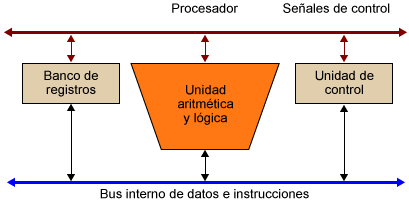

Un procesador, incluye tanto registros visibles por el usuario como registros de control/estado. Los registros visibles por el usuario pueden ser de uso general o tener una utilidad especial, mientras que los registros de control y estado se usan para controlar el funcionamiento del procesador, un claro ejemplo es el contador de programa. Los procesadores utilizan la segmentación de instrucciones para acelerar la ejecución. La segmentación de cauce se puede dividir en ciclo de instrucción en varias etapas separadas que operan secuencialmente, tales como la captación de instrucción, decodificación de instrucción, cálculo de direcciones de operando, ejecución de instrucción y estructura del operando resultado.

El término procesador actualmente se puede entender como microprocesador porque todas las unidades funcionales que forman el procesador se encuentran dentro de un chip, pero hay que tener presente que, por el aumento de la capacidad del nivel de integración, dentro de los microprocesadores se pueden encontrar otras unidades funcionales del computador. Por ejemplo:
Unidades de ejecución SIMD: unidades especializadas en la ejecución de instrucciones SIMD (single instruction, multiple data), instrucciones que trabajan con estructuras de datos vectoriales, como por ejemplo instrucciones multimedia.
Memoria caché: prácticamente todos los procesadores modernos incorporan dentro del propio chip del procesador algunos niveles de memoria caché. Unidad de gestión de memoria o memory management unit (MMU): gestiona el espacio de direcciones virtuales, traduciendo las direcciones de memoria virtual a direcciones de memoria física en tiempo de ejecución. Esta traducción permite proteger el espacio de direcciones de un programa del espacio de direcciones de otros programas y también permite separar el espacio de memoria del sistema operativo del espacio de memoria de los programas de usuario.
Unidad de punto flotante o floating point unit (FPU): unidad especializada en hacer operaciones en punto flotante; puede funcionar de manera autónoma, ya que dispone de un conjunto de registros propio.
El Registro está organizado en una estructura jerárquica compuesta por subárboles con sus respectivas claves, subclaves y entradas. El contenido del Registro puede variar considerablemente de un equipo a otro, en función de los dispositivos, servicios y programas instalados en cada equipo. Las claves pueden contener subclaves que, a su vez, pueden contener otras subclaves. Aunque la mayor parte de la información del Registro se almacena en disco y se considera permanente, algunos datos almacenados en claves volátiles se sobrescriben cada vez que se inicia el sistema operativo.
Minimizan el acceso entre el microprocesador y cpu, debido a que se encuentran dentro del CPU, son manipulables por lenguaje de máquina.
Aquí tenemos los 2 principales:
1) Registros de Datos. (Manipulables a bajo nivel).
2) Registro de Direcciones (Manipulables a bajo nivel).
• Registro de índice. Sirve para direccionamiento, es similar al “PC”, pero tiene un valor base de autoincremento:
Ejemplo: Base 3, 6, 9…n, n+1; que se irá sumando para obtener una dirección más efectiva.
Hay diversos registros del procesador que se emplean para controlar su funcionamiento. La mayoría de ellos, en la mayor parte de las máquinas, no son visibles por el usuario. Algunos de ellos pueden ser visibles por ciertas instrucciones máquina ejecutadas en un modo de controlo de sistema operativo. Naturalmente, máquinas diferentes tendrán distintas organizaciones de registros y usarán distinta terminología.
A continuación se presenta una lista razonablemente completa de tipos de registros, con una breve descripción. Son esenciales cuatro registros para la ejecución de una instrucción:
• Contador de programa (Program Counter, PC): contiene la dirección de la instrucción a captar.
• Registro de instrucción (lnstruction Register, IR): contiene la instrucción captada más recientemente.
• Registro de dirección de memoria (Memory Address Register, MAR): contiene la dirección de una posición de memoria.
• Registro intermedio de memoria (Memory Buffer Register, MBR): contiene la palabra de datos a escribir en memoria o la palabra leída más recientemente.
Los cuatro registros que se acaban de mencionar se usan para la transferencia de datos entre el procesador y la memoria. Dentro del procesador, los datos tienen que ofrecerse a la ALU para su procesamiento. La ALU puede tener acceso directo a MBR y a los registros visibles por el usuario. Como alternativa, puede haber registros intennedios adicionales en tomo a la ALU; estos registros sirven como registros de entrada y salida de la ALU e intercambian datos con MBR y los registros visibles por el usuario.
Minimizan el acceso entre el microprocesador y cpu, debido a que se encuentran dentro del CPU, son manipulables por lenguaje de máquina. Aquí tenemos los 2 principales: 1) Registros de Datos. (Manipulables a bajo nivel). 2) Registro de Direcciones (Manipulables a bajo nivel). • Registro de índice. Sirve para direccionamiento, es similar al “PC”, pero tiene un valor base de autoincremento: Ejemplo: Base 3, 6, 9…n, n+1; que se irá sumando para obtener una dirección más efectiva.
En algún diseño concreto de procesador es posible encontrar otros registros relativos a estado y control. Puede existir un puntero a un bloque de memoria que contenga información de estado adicional (por ejemplo, bloques de control de procesos). En las máquinas que usan interrupciones vectorizadas puede existir un registro de vector de interrupción. Si se utiliza una pila para llevar a cabo ciertas funciones (por ejemplo, llamada a subrutina), se necesita un puntero de pila del sistema.
En un sistema de memoria virtual se usa un puntero a la tabla de páginas. Por último, pueden emplearse registros para el control de operaciones de E/S. En el diseño de la organización de los registros de control y estado entran en juego varios factores. Una cuestión primordial es el soporte del sistema operativo. Algunos tipos de información de control son de utilidad específica para el sistema operativo.
Si el diseñador del procesador posee una comprensión funcional del sistema operativo que se va a utilizar, la organización de los registros puede adaptarse hasta cierto punto a ese sistema operativo. Otra decisión importante en el diseño es la distribución de información de control entre registros y memoria. Es frecuente dedicar los primeros (más bajos) pocos cientos o miles de palabras de memoria para fines de control. El diseñador debe decidir cuánta información de control debiera estar en registros y cuánta en memoria. Se presenta el compromiso habitual entre coste y velocidad
Un ciclo de instrucción (también llamado ciclo de fetch-and-execute o ciclo de fetch-decode-execute en inglés) es el período que tarda la unidad central de proceso (CPU) en ejecutar una instrucción delenguaje máquina. Comprende una secuencia de acciones determinada que debe llevar a cabo la CPU para ejecutar cada instrucción en un programa.
Cada instrucción del juego de instrucciones de una CPU puede requerir diferente número de ciclos de instrucción para su ejecución. Un ciclo de instrucción está formado por uno o más ciclos máquina. Para que cualquier sistema de proceso de datos basado en microprocesador (por ejemplo un ordenador) o microcontrolador (por ejemplo un reproductor de MP3) realice una tarea (programa) primero debe buscar cada instrucción en la memoria principal y luego ejecutarla.
La segmentación de las instrucciones (pipeline) consiste en dividir el ciclo de ejecución de las instrucciones en un conjunto de etapas. Estas etapas pueden coincidir o no con las fases del ciclo de ejecución de las instrucciones.
El objetivo de la segmentación es ejecutar simultáneamente diferentes etapas de distintas instrucciones, lo cual permite aumentar el rendimiento del procesador sin tener que hacer más rápidas todas las unidades del procesador (ALU, UC, buses, etc.) y sin tener que duplicarlas. La división de la ejecución de una instrucción en diferentes etapas se debe realizar de tal manera que cada etapa tenga la misma duración, generalmente un ciclo de reloj. Es necesario añadir registros para almacenar los resultados intermedios entre las diferentes etapas, de modo que la información generada en una etapa esté disponible para la etapa siguiente.
La segmentación de instrucciones es similar al uso de una cadena de montaje en una fábrica de manufacturación. En las cadenas de montaje, el producto pasa a través de varias etapas de producción antes de tener el producto terminado. Cada etapa o segmento de la cadena está especializada en un área específica de la línea de producción y lleva a cabo siempre la misma actividad. Esta tecnología es aplicada en el diseño de procesadores eficientes. A estos procesadores se les conoce como pipeline processors.
Estos están compuestos por una lista de segmentos lineales y secuenciales en donde cada segmento lleva a cabo una tarea o un grupo de tareas computacionales. Los datos que provienen del exterior se introducen en el sistema para ser procesados. La computadora realiza operaciones con los datos que tiene almacenados en memoria, produce nuevos datos o información para uso externo. Las arquitecturas y los conjuntos de instrucciones se pueden clasificar considerando los siguientes aspectos:
•Almacenamiento de operandos en la CPU: dónde se ubican los operandos aparte de la memoria.
•Número de operandos explícitos por instrucción: cuántos operandos se expresan en forma explícita en una instrucción típica. Normalmente son 0, 1, 2 y 3.
•Posición del operando: ¿Puede cualquier operando estar en memoria?, o deben estar algunos o todos en los registros internos de la CPU. Cómo se especifica la dirección de memoria (modos de direccionamiento disponibles).
•Operaciones: Qué operaciones están disponibles en el conjunto de instrucciones. Tipo y tamaño de operandos y cómo se especifican.
Es la técnica de solapamiento de instrucciones mediante la división de su ejecución en etapas o segmentos. Los segmentos están conectados entre sí cada uno al siguiente. Todos los segmentos proceden y progresan a la vez. La segmentación es transparente al programador.
•Direccionamiento implícito: Depende solamente de la instrucción, es decir, la instrucción no lleva parámetros.Particularmente en instrucciones que no accedan memoria, o bien que tienen una forma específica de accesarla.
•Direccionamiento inmediato: En la instrucción está incluido directamente el operando. En este modo el operando es especificado en la instrucción misma. En otras palabras, una instrucción de modo inmediato tiene un campo de operando en vez de un campo de dirección. El campo del operando contiene el operando actual que se debe utilizar en conjunto con la operación especificada en la instrucción. Las instrucciones de modo inmediato son útiles para inicializar los registros en un valor constante.
•Direccionamiento relativo: En el direccionamiento relativo se declara el operando como el valor de un registro entre corchetes, al cual se le aplica un desplazamiento, es decir, se le suma un valor que indicara el desplazamiento a partir de la dirección indicada por el registro.
•Direccionamiento directo: El campo de operando en la instrucción contiene la dirección en memoria donde se encuentra el operando. En este modo la dirección efectiva es igual a la parte de dirección de la instrucción. El operando reside en la memoria y su dirección es dada directamente por el campo de dirección de la instrucción. En una instrucción de tipo ramificación el campo de dirección especifica la dirección de la rama actual.
•I-8086: Los registros del procesador, se usan para contener los datos con que se está trabajando puesto que el acceso a los registros es mucho más rápido que los accesos a memoria. Se pueden realizar operaciones aritméticas y lógicas, comparaciones, entre otras. Los modos del 8086 son indirectos por registro, indexados o directos por registro.
•Motorola 68000: El mismo direccionamiento lleva implícito el tipo de registro sobre el que trabaja (direcciones o datos). Está basado en dos bancos de 8 registros de 32 bits. Un banco es de datos (Dn) y el otro de punteros (An). Además contiene un contador de programa de 32 bits y un registro de estado de 16 bits.
•80386: Para este microprocesador existe un modo nuevo que requiere un byte adicional denominado SIB (escala, índice, base) que se añade al byte de operandos, es útil para direccionar elementos de vectores de longitudes diferentes en bucles. Es una alternativa a los modos autoindexados que esta máquina no soporta.